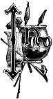

THIS volume the author has sought to lay before the reader a description of life and times lying beyond the light of history. This is indeed an extensive subject, and calls for some explanation, both as to the general design of the work and what steps have been taken to secure correct information.
History is a word of varied import. In general, when we talk about history, we mean those accounts of past events, times, and circumstances of which we have written records. Not necessarily meaning alphabetical writing, because hieroglyphic records have furnished much true history. Hieroglyphic writing, which long preceded alphabetical writing, is itself a comparatively recent art. In no country do we find any records carrying us further back than a few thousand years before the Christian era. We have every reason to believe that the historical part of man's life on the globe is but an insignificant part of the whole. This historic period is not the same in all countries. It varies from a few centuries in our own country to a few thousands of years in Oriental lands. In no country is there a hard and fast line separating the historic period from the prehistoric. In the dim perspective of years the light gradually fades away, the mist grows thicker and thicker before us, and we at last find ourselves face to face with the unknown past.
This extensive period of time is not, however, utterly lost to us. We have simply to gather our information in some other way. Enthusiastic explorers, digging beneath the ashes of Vesuvius, have brought to light the remains of an entombed city. Of this city we indeed have historic records, but even if all such records had long since disappeared, we would gather much information as to the nationality of the inhabitants, their customs, and manners, by a simple inspection of the relics themselves. Everywhere over the earth, entombed beneath the feet of the living, or crumbling on the surface, are the few relics of a past far antedating the relics of Pompeii. They are the proofs positive that some people inhabited the land in far away times.
Our object is to gather together the conclusions of the scientific world as to primitive man. We wish to see how far back in the geological history of the globe we can find evidence of man's existence, and we desire to learn his surroundings and the manner of his life. There can be no more important field than for us to thus learn of the past. To read the story of primitive man, to walk with him the earth in ages long ago, with him to wage war on the huge animals of a previous epoch, to recede with him before the relentless march of the ice of the Glacial Age, to watch his advance in culture, to investigate whether there are any races of men now living which are the direct descendants of this primeval man.
The author makes no claims to original investigations. He trusts, however, it will not be considered impertinent for a mere loiterer in the vestibule of the temple of science to attempt to lay before others the results of the investigations of our eminent scholars. He has endeavored faithfully to perform this task. As far as possible technical language has been avoided. This is because he has written not for the distinctively scientific men, but rather for the farmer, the mechanic, and the man of business. Constant references are made to the authorities consulted. The reader his a right to know who vouches for the statements made in the text.
The pleasantest part of an author's duty is to return thanks for assistance. After the manuscript was prepared with what care could be bestowed on it, it was determined to submit it to some of our best American scholars for criticism. Accordingly, each of the gentlemen named on the title page were requested to review one or more chapters. As far as possible, each one was asked to review that chapter or chapters for which, either by reason of the position they held, or the interest they were known to take in such subjects, they would by common assent be acknowledged as eminently fitted to sit in judgment. In justice to them, it should be stated that they were not expected to concern themselves with the literary merits or demerits of the manuscript, but to criticise the scientific statements made therein. To each and all of these gentlemen the author would acknowledge his deep obligations.
We are indebted to Rev. J. P. MacLean, the well-known archaeologist, both for many valuable suggestions, and for the use of wood-cuts on pages 60, 138 and 396. We are also under obligation to Rev. S. D. Peet, editor of the American Antiquarian, for cuts illustrative of the effigy mounds of Wisconsin. The officials of the Smithsonian Institution, and the Bureau of Ethnology have our thanks for many cuts, for which credit is given them throughout the work.
Finally, the author wishes to say that it was the intention to make this work the joint production of the author and his partner, Mr. S. C. Ferguson, but before any progress was made it was deemed advisable to change the programme. While the literary work has all been performed by the author, the many details necessarily connected with the publication of a book were attended to by Mr. Ferguson.
E. A. ALLEN.
Cincinnati, January 1, 1885.